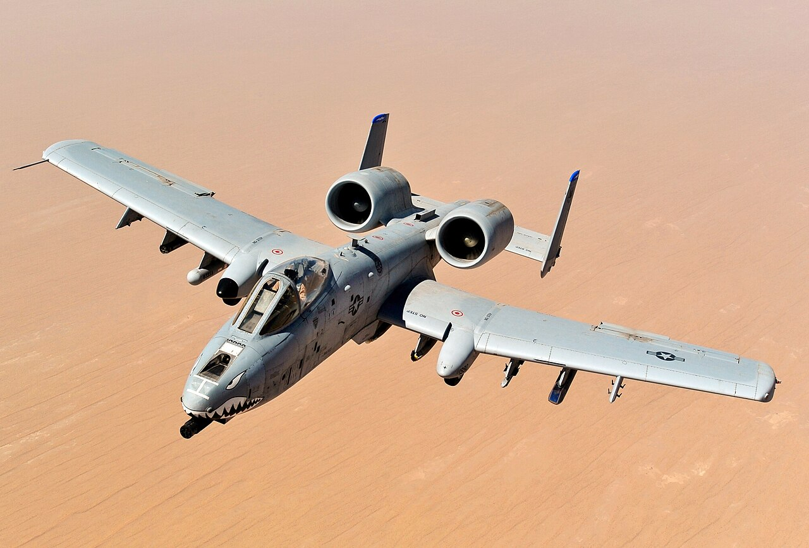
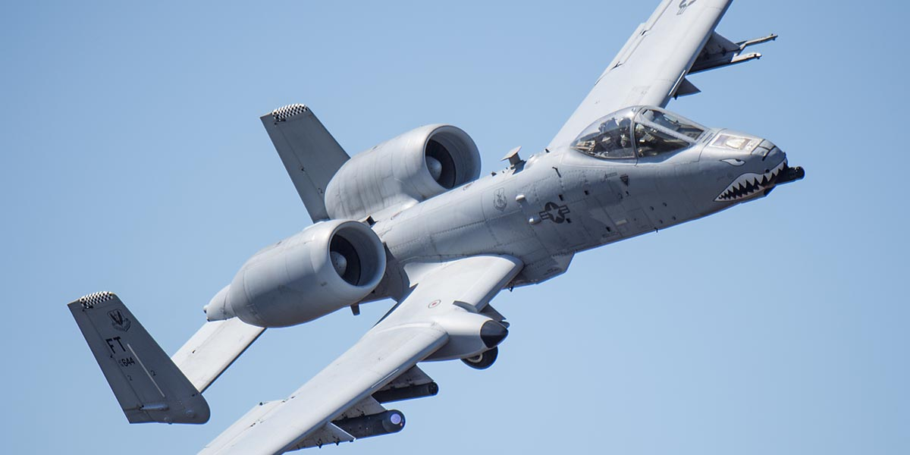

A-10 Thunderbolt II
Aviación de Ataque a Tierra | Estados Unidos | 1977
Contexto de aparición y análisis técnico: Desarrollado por Fairchild-Republic a través del programa A-X de la USAF a finales de los 60. Nació tras analizar la vulnerabilidad de los aviones supersónicos en misiones CAS en Vietnam. Diseñado mecánicamente alrededor del icónico cañón rotativo GAU-8/A Avenger de 30 mm, capaz de disparar munición de uranio empobrecido a 3.900 dpm. Cuenta con una bañera blindada de titanio que protege al piloto de impactos directos de proyectiles antiaéreos de hasta 23 mm.
- Motores: 2× General Electric TF34-GE-100 turbofán (9.065 lbf de empuje c/u)
- Armamento: GAU-8/A Avenger de 30 mm + 11 puntos duros bajo las alas
- Velocidad y Techo: 706 km/h (Mach 0.56) | Techo de servicio de 13.700 m


